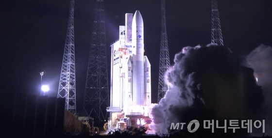

"코로나에 가려졌지만.." 文도 추어올린 천리안2B…어떤 위성이길래

"신종 코로나 바이러스 감염증(코로나19) 때문에 가려졌지만 매우 자부심을 가질만한 일이다".
문재인 대통령이 지난 6일 목표 궤도에 안착한 환경·해양·기상 관측용 첫 정지궤도 위성 인 '천리안위성 2B호'(정지궤도복합위성 2B호)와 관련해 9일 페이스북에 적은 글이다.
화면에 보이는 형태로 그대로 출력이 됩니다.
"미세먼지도, 코로나19도 이길 수 있다"
문 대통령은 과학기술정통부, 한국항공우주연구원, 한국해양과학기술원, 한국항공우주 산업 등 위성 개발에 관여한 곳들을 일일이 언급한 뒤 "우리는 코로나19도 미세먼지도 이 겨낼 수 있다. 국민께서도 우리 과학자, 기술자, 연구자들께 응원의 박수를 보내달라"고 당부했다.
전세계적으로 번진 코로나19 확산 사태로 국내 과학계의 두드러진 성과가 가려지자 직접 격려와 치하의 글을 올린 것이다.
‘천리안 2B’는 우리 독자기술로 개발한 세계 최초의 환경감시 정지궤도위성이다. 지난달 19일 남미 프랑스령 기아나우주센터에서 발사에 성공해 지난 6일 오후 7시 30분쯤(한국시각) 목표 정지궤도(고도 35,786km, 경도 128.25°)에 무사히 안착했다.
동경 128.25도의 정지궤도는 우리나라(서울기준 동경 127도)가 확보한 우리나라에서 가장 가까운 적도 상공의 정지궤도이다. 목표 정지궤도 안착으로 임무 수행을 위한 성공적인 발사에 최종적으로 성공한 것이다.
천리안 2B호는 세계 최초로 미세먼지 등 대기오염물질을 주간 상시 관측할 수 있는 초분광 환경탑재체를 장착했다. 문 대통령이 "우리나라는 세계 최초로 한 지역의 대기와 해양환경 변화를 정지궤도 위성을 통해 상시적으로 지속 관찰할 수 있는 나라가 됐다"고 평가한 배경이다.

세계 최초 미세먼지 상시관측 장비 탑재
천리안 2B호의 환경탑재체는 화석연료 연소 시 발생하는 이산화황, 이산화질소 등 미세먼지 유발물질들이 특정 파장의 빛을 흡수·산란하는 특성을 이용한 초분광 기술을 활용해 미세먼지를 관측한다.
천리안위성 1호보다 해상도 4배(500→250m), 산출정보 2배(13→26종), 자료전송속도 18배(6.2→115Mbps) 등 한층 향상된 성능으로 해양관측 임무를 수행하는 해양탑재체도 탑재했다. 천리안 2B호의 해양탑재체는 적조, 기름 유출 등 해양오염물질과 해무·해빙·염분 농도 등 다양한 해양정보를 고해상도 광학 카메라로 상시 관측한다. 이 관측자료는 해양오염물질에 의한 해양피해를 최소화하기 위한 연구활동 등에 활용될 예정이다.
천리안 2B호는 2022년 이후 발사될 미국 항공우주국(NASA)의 기후·대기환경 관측용 정지궤도위성 '템포'(TEMPO)와 2023년 이후 우주로 나가는 유럽우주기구(ESA)의 '센티널-4'(Sentinel-4)과 함께 앞으로 전지구적 환경 감시체계를 구축한다.
천리안 2B호는 이달 위성 본체 및 환경·해양탑재체의 상태점검을 마치고 환경·해양탑재체 산출물 품질을 최적화하기 위한 정밀 보정과정을 수행한 뒤 4월부터 서비스를 개시한다. 미세먼지 등 대기환경 정보는 2021년부터, 해양정보는 2020년 10월부터 대국민 서비스가 가능할 전망이다.